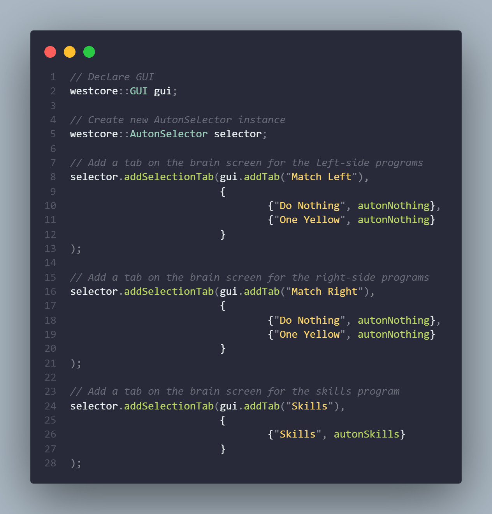

Tips and Tricks
Hello there! Throughout my almost five years of VEX programming, there have been several tips or fixes I really wish I had known earlier. I hope you can find the information below useful.
Keep your autonomous functions in separate files
Seriously. If you aim to be competitive at all in VEX robotics, you’ll likely have at least four different autonomous programs you can run depending on your alliance partner. If you keep all of these inside of a single autonomous function, more often than not you can accidentally add code to the wrong autonomous.
You can solve this issue by keeping each autonomous in its own separate file, with the code being contained inside of a function.
Another benefit of this approach is the ability to categorize programs, whether it be designating the side it runs on or the type of autonomous (match, skills, nothing, etc.).
An example of this file structure can be seen here:
project-root/
├─ src/
│ ├─ auton/
│ │ ├─ skills/
│ │ │ ├─ skillsAuton.cpp
│ │ ├─ match/
│ │ │ ├─ someMatchAuton.cpp
│ │ │ ├─ anotherMatchAuton.cpp
│ │ ├─ tuning/
│ │ ├─ autonNothing.cpp
Use an autonomous selector
Now that you have several autonomous programs, it is important to select the right one for a match. I’ve seen way too many occurrences where someone will hardcode the selected program and forget to change it between matches, resulting in unncessary failure.
Thankfully, PROS is bundled with LVGL, a lightweight graphics library for drawing onto the brain’s screen. You can find more in-depth information on how to use the library here.
To make anything relating to the brain’s GUI (Graphical User Interface) easy to use, WestCore contains a variety of wrappers making LVGL more C++ friendly.
An example usage of the AutonSelector can be seen below:
Use errno, I beg of you
If you’re either sending data to or retrieving data from a V5 device and the end result is not intended, an internal error might have occurred.
When any PROS device experiences an error, it will automatically set the global errno variable to the error code.
To find the actual error message from the error code, you can either search the number online or use the C function strerror.
For more information, see https://www.tutorialspoint.com/cprogramming/c_error_handling.htm.